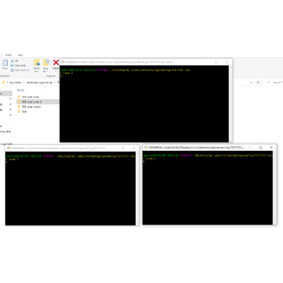

TCP-IP Chat room
TCP-IP ChatRoom, using socket programming I have created the client side and the server side. The process of the server to receive the message from all the clients and broadcaste the message to the other clients.
In the Server side, the server is binded to the particular to the IP address and to specific port number, Now the server in the active state, now it starts to listen for the client users. Wheneven the Client get connectedd to particular IP and port number, TCP-IP connection is laid between the user and the server, starts receives messages from the client and ready to send the msgs from the other clients
In the client side, the client will try to reach the server's IP address and the port number. If its falied to connect, it seems the server is inactive or the client side problems. If the client get conneted to the server, now the user can able to receive the messages from the other clients whoever connected to the clients and client can able to send the msg to the server and server will broadcaste the msgs to all clients